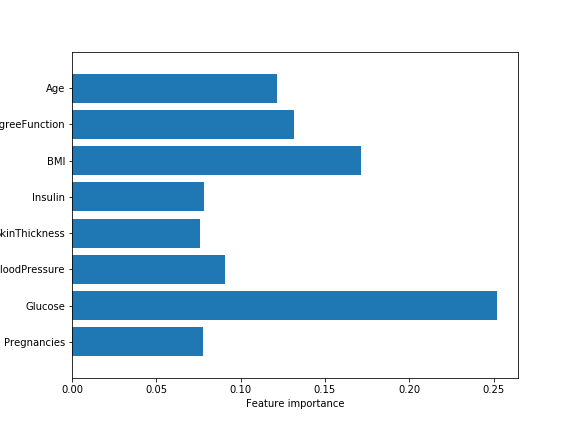

Machine learning is an application of artificial intelligence (AI) that provides systems the ability to automatically learn and improve from experience without being explicitly programmed. Machine learning focuses on the development of computer programs that can access data and use it learn for themselves
The k-NN algorithm is arguably the simplest machine learning algorithm. Building the model consists only of storing the training data set. To make a prediction for a new data point, the algorithm finds the closest data points in the training data set — its “nearest neighbors.”
n_neighbors=9
is one of the predictive modelling approaches used in statistics, data mining and machine learning. It uses a decision tree (as a predictive model) to go from observations about an item (represented in the branches) to conclusions about the item's target value (represented in the leaves)
Feature importance rates how important each feature is for the decision a tree makes. It is a number between 0 and 1 for each feature, where 0 means “not used at all” and 1 means “perfectly predicts the target”. The feature importances always sum to 1:
The project dataset contains eight features. The first decision tree model indicates that skinthickness has no importance
Accuracy on training set: 0.845
Accuracy on test set: 0.750
We wanted to try removing the skinthickness feature to see if there was a change in the accuracy of the results
The change in accuracy after removing the skinthickness was negligible
Accuracy on training set: 0.814
Accuracy on test set: 0.755
We wanted to try removing the most significant feature (Glucose) to see if there was a change in the accuracy of the results
The change in accuracy observed after removing the glucose was 1 percent for the test. The training accuracy went down almost 6 percent
Accuracy on training set: 0.769
Accuracy on test set: 0.745
Random forest is a supervised learning algorithm which is used for both classification as well as regression. But however, it is mainly used for classification problems. As we know that a forest is made up of trees and more trees means more robust forest. Similarly, random forest algorithm creates decision trees on data samples and then gets the prediction from each of them and finally selects the best solution by means of voting. It is an ensemble method which is better than a single decision tree because it reduces the over-fitting by averaging the result.
The all eight feautres show some level of importance,however; The accuracy rate on the training set indicates over-fitting and adjustments are necesary
Accuracy on training set: 1.000
Accuracy on test set: 0.786
After adjusting the hyper parameter we observed an acceptable result for both training and test data sets
Accuracy on training set: 0.880
Accuracy on test set: 0.792
After comparing the accuracy results of the three ML models above, Random Forest showed the highest accuracy rate.Therefore Random Forest is the preferred ML model for this project